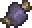

The Eater of Worlds is likely to be the third boss that a player would fight on worlds that contain the Corruption, following Eye of Cthulhu and Slime King.
It is a massive worm with dozens of segments, each with their own healthbar
Every last segment must be destroyed in order to defeat the boss.
Since the boss is effectively dozens of different entities mashed together, killing segments that are in the middle will cause the boss to split apart.
The now separated worms will act independently of each other to attack the player.
In these isolated worms, the frontmost segment will morph into a head segment.
The boss attacks by trying to ram the player with its head segments. Making contact with other segments will deal lesser damage.
The Eater of Worlds cannot spawn without direct player action. There are 2 ways to achieve this.
Breaking 3 Shadow Orbs found inside of the Corruption Biome will cause the boss to spawn.
Alternatively, an item known as Worm Food can be created and used in the Corruption to spawn the boss.
The Health values shown are the total of all of the individual segments' health combined.
This boss does NOT have one overall main health pool.
| Difficulty: | Classic | Expert | Master |
|---|---|---|---|
| Health: | 10050 | 15120 | 19224 |
| Attack: | 22 (Head) to 13 (Other Segment) | 48 (Head) to 20 (Other Segment) | 72 (Head) to 31 (Other Segment) |
| Defense: | 2 (Head) to 4 (Other Segment) | 4 (Head) to 6 (Other Segment) | 4 (Head) to 6 (Other Segment) |
| Segment Count: | 67 | 72 | 72 |
The Eater of Worlds. This image has far less segments than the boss starts with.
Shadow Orb Object
Worm Food Item
